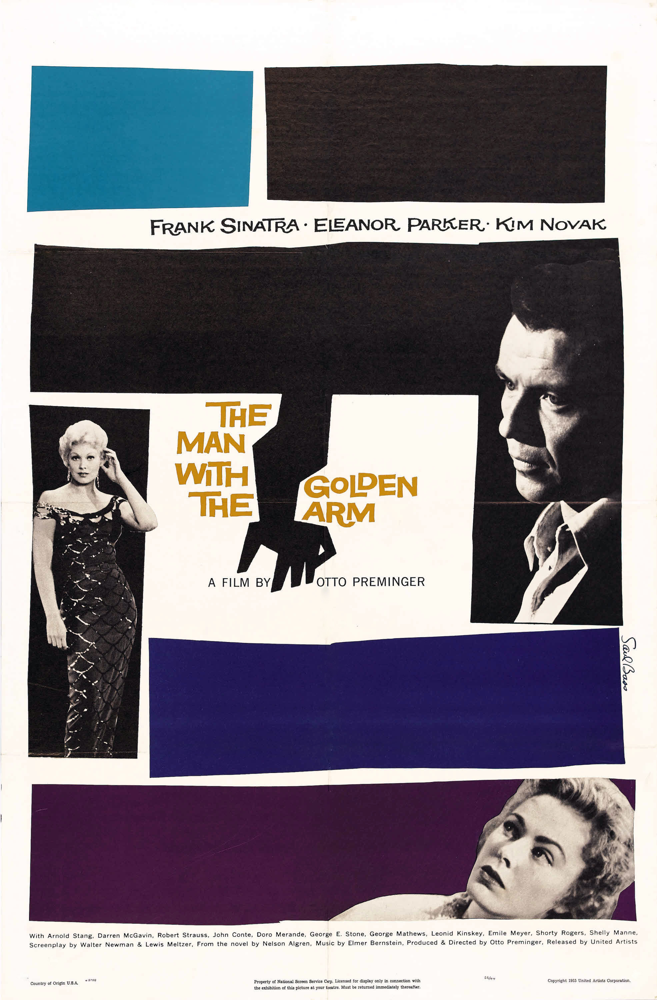

The Man with the Golden Arm
28th Academy Awards
(Oscars 1956)
3 Nominations, 0 Awards
| Nominations | ||
|---|---|---|
| Category | Nominees | Result |
| Actor | Frank Sinatra | Nominated |
| Art Direction (Black-and-White) | Darrell Silvera and Joseph C. Wright | Nominated |
| Music (Music Score of a Dramatic or Comedy Picture) | Elmer Bernstein | Nominated |